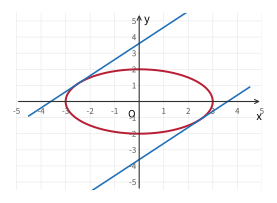

ホーム ＞ 数学C ＞ 2次曲線
楕円 \(\dfrac{x^2}{9}+\dfrac{y^2}{4}=1\) の接線で、傾きが \(1\) であるものの方程式を求めよ。
\(y=mx+k\) を代入して \(x\) の2次方程式にし、判別式 \(D=0\)。結果は \(k^2=a^2m^2+b^2\)（接線が2本）。
\(y=x+k\) を \(\dfrac{x^2}{9}+\dfrac{y^2}{4}=1\) に代入して \(x\) の2次方程式にする。
\[13 X^{2} + 18 X k + 9 k^{2} - 36=0\]
\(D=0\) より：\[k^2=9\cdot1+4=13\]

【答案（テストに書く形）】
答